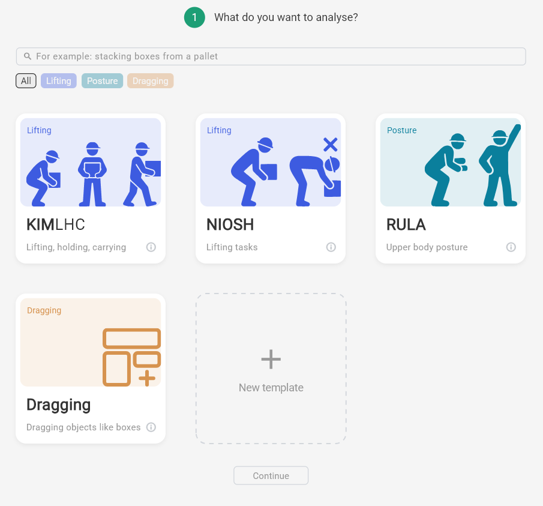
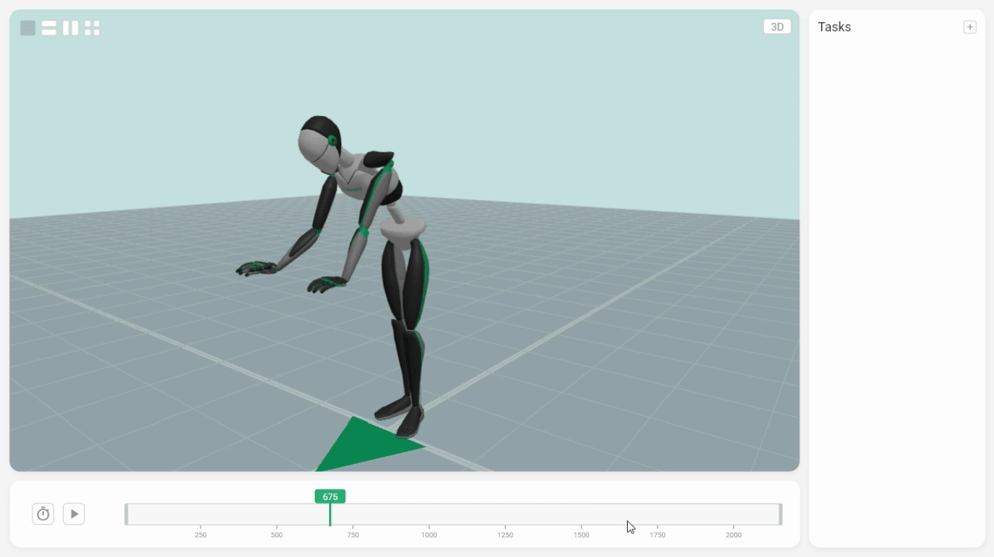

Running a template works like running any other report: the same input sources, the same timeline and the same way of marking tasks. What differs is what the template asks and shows. This article walks through the flow and the result pages, and what to do when a recording lacks data the template needs.
1 Overview
| Step | What you do | Screen |
|---|---|---|
| 1 | Select the template tile | New Project |
| 2 | Choose the input source and the recording | Input Source page |
| 3 | Mark the tasks and trim the recording | Input page |
| 4 | Fill in the general information and the template's questions | Input page (scrolls down) |
| 5 | Process, then read, save and export | Report |
2 Select the Template
On the New Project page, templates appear as tiles next to the built-in assessment methods, grouped by category. The chips at the top filter by category. Hover the info icon of a tile to read its description. Select the tile and click Continue.

3 Choose the Recording
The next screen shows the input sources the template was built for, one tile for each. Choose where the recording for this report comes from.
Today a template uses Xsens motion capture, so you choose between two tiles:
- Upload a Xsens recording as a .mvnx file — a recording you exported from Xsens MVN Analyze.
- Use a Xsens recording made within this app — a recording you made with live recording, stored in your Recordings Database.
More input sources will appear here as they become available for templates. A recording made in the app brings its trim range, tasks and details with it. See Uploading & Processing Xsens Data and .mpcap vs .mvnx Explained.
4 Tasks & Trimming
The input page shows the 3D view with the timeline below it, and the Tasks panel on the right. A task is a distinct part of the recording that you want to look at separately, such as one movement or one cycle.
Adding a task
- Click and drag on the timeline to highlight a frame range. The selection is shown in the branding colour configured in your settings.
- Click the + button in the Tasks panel to create a task from that range.
- The task appears in the list. Its start frame and end frame are filled in from your selection and can be edited, and you can give it a description, which is its name in the report.
- Next to these, the window of a task shows the task fields of the template, such as the weight of the load. Fill these in for every task.

You can edit or delete tasks in the list at any time. Whether tasks are needed depends on the template. Without tasks, the report covers the whole recording. With tasks, every result page is shown per task.
Trimming the recording
The two handles at the start and the end of the timeline set the observation window. Anything outside the trimmed range is ignored, and a report without tasks covers the trimmed range only. A recording made in the app brings the trim range it was saved with.
5 Answer the Questions
Scroll down to Provide task information. The general information comes first: workplace, evaluator, operator, date, age, gender and weight, as far as your privacy settings show them. Below it are the template's own questions.
The Process button becomes active once every required field and task field is filled in. Hover it to see what is still missing.
6 Processing
Click Process. Motionprint Ergo first checks that the recording holds everything the template measures, then calculates every variable for every frame and every task.
If the recording lacks data a variable needs, processing stops with Missing required data, naming the variables. A report on that recording would be empty or wrong. Export the recording from Xsens MVN with complete motion data (segment data, joint angles, centre of mass and foot contacts), or record it again.
Some values are worked out rather than read directly. A recording made in the app stores the speed of the pelvis only; the speed and acceleration of another body part are then derived from its position.
7 Reading the Results
The report opens with the tabs the template defines, followed by Findings.
- Task selector — with more than one task, choose the task at the top of a result page.
- Side switch — a block that shows both sides has an R / L switch.
- Info icon — explains what a block measures and where its zones come from.
- 3D view — plays the recording; the graphs on the same page follow it.
- General info — change the workplace, evaluator, operator or comments here; the change also applies to the input page.
Type your conclusions in the sections of Findings.
8 Edit, Save & Export
Edit takes you back to the input page with everything intact. Change the trim, tasks or answers and process again; what you typed in Findings stays.
Save stores the report in the Projects Database, with the recording, the answers, the findings and the template version it was made with. Reopening the project shows it exactly as saved, even if the template has changed since. When you save a reopened project, choose Save to overwrite it or Save as New for a copy. In the database, the Templates filter shows template reports, with the template name as the method.
Export creates a PDF or an Excel file, with your branding:
| Part | Excel | |
|---|---|---|
| Opening | Cover with the template name, description and general information | Summary sheet |
| Findings | Findings page | Findings sheet |
| Results | The result pages per task, starting with the posture at the start and end of the task | A sheet per result page and task, with mean, minimum, maximum and time per zone of every measurement |
| Reference | Report guide with every measurement and its zones | Guide sheet |